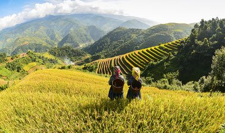

החברה להגנת הטבע
 החברה להגנת הטבע (ע"ר) הינה הארגון הסביבתי הגדול והוותיק בישראל ואחד הוותיקים בעולם. החברה היא עמותה ציבורית (עמותה רשומה) בלתי תלויה הפועלת שלא למטרת רווח. החברה להגנת הטבע הוקמה בשנת 1953, על רקע המאבק נגד ייבוש אגם החולה. מאז ועד היום, מהווה שמירת הטבע, הסביבה והנוף הישראליים את עיקר פעילותנו. העובדים, אנשי החברה להגנת הטבע מקדישים את חייהם לשמירה על הסביבה והטבע הייחודי בו התברכנו. זוהי המשימה שלנו - להיות עם האצבע על הדופק בסוגיות הסביבה והטבע הבוערות בארצנו ולפעול למציאת פתרונות שיענו על צרכי האדם והטבע גם יחד. עיקרי העשייה שלנו באים לידי ביטוי באמצעים השונים: חינוך, מאבקים ציבוריים לשמירה על שטחים פתוחים (למשל קמפיין פרחי הבר, הגנה על הים והחופים, שימור הכנרת, פרויקט העגורים בעמק החולה), פעילות בקרב מקבלי החלטות,חברות בוועדות תכנון, עידוד טיילות ותיירות פנים, סימון שבילים, פעילות עם הציבור בערים ובישובים, יצירת שיתופי פעולה בין ארגוני סביבה וארגונים מסחריים.